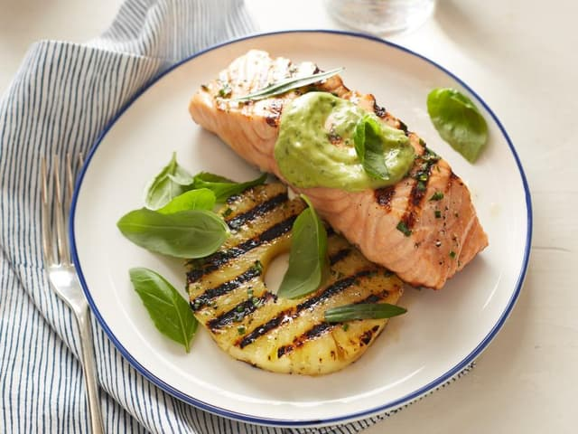

Grilled Salmon and Pineapple Avocado Dressing

This flavorful Grilled Salmon and Pineapple with Avocado Dressing is a
perfectly balanced lunch or dinner for four, it's brimming with brightness
with fresh herbs like basil and chives, with grilled Pineapple adding just
the right amount of summertime sweetness!
Ingredients
- 2 tablespoons extra-virgin olive oil
- 1 1/2 teaspoons chopped fresh basil, plus some sprigs, for garnish
- 1 1/2 teaspoons chopped chives
- 1 teaspoon chopped fresh tarragon, plus some fresh sprigs, for garnish
- 1/2 teaspoon kosher salt
- 1/2 teaspoon freshly-ground black pepper
- Four 4-ounce skinless salmon fillets, each about 1-inch thick
- Four 1/2-inch thick round slices of Pineapple, preferably fresh
Avocado Dressing, recipe follows:
- 1/4 cup fresh lemon juice (from 1 large lemon)
- 2 tablespoons chopped fresh basil
- 1 tablespoon finely chopped fresh chives
- ! tablespoon extra-virgin olive oil
- 1 1/2 finely chopped fresh tarragon
- 1/8 teaspoon anchovy paste (optional)
- 1/8 teaspoon kosher salt
- 1/8 teaspoon freshly-ground black pepper
- 1 small clove of garlic, smashed
- 1/2 avocado, diced
Directions
- Place a grill pan over medium-high heat or preheat a gas or charcoal
grill
- Whisk the oil, chopped basil, chives, chopped tarragon, salt and pepper
in a small bowl to blend. Brush the salmon and pineapple slices with
the herb mixture
- Cook the salmon until barely cooked through and still pink inside,
about 4 minutes per side. Cook the pineapple until slightly charred, 3
to 4 minutes per side.
- Transfer 1 pineapple slice to each plate and arrange a piece of salmon
slightly overlapping it. Spoon 2 tablespoons of the avocado dressing over
each piece of fish. garnish with basil and tarragon sprigs, then serve.
Avocado dressing
Combine the lemon juice, basil, chives, olive oil, tarragon, anchovy paste
(if using), salt, pepper, garlic and avocado in a food processor. Add 2
tablespoons of water and process until smooth. Cover the dressing and let
stand for at least 15 minutes and up to 1 hour for the flavors to blend.
Cook's note
If using canned pineapple, make sure to blot it dry very well before grilling
it